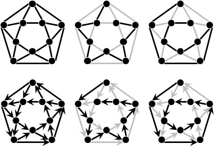
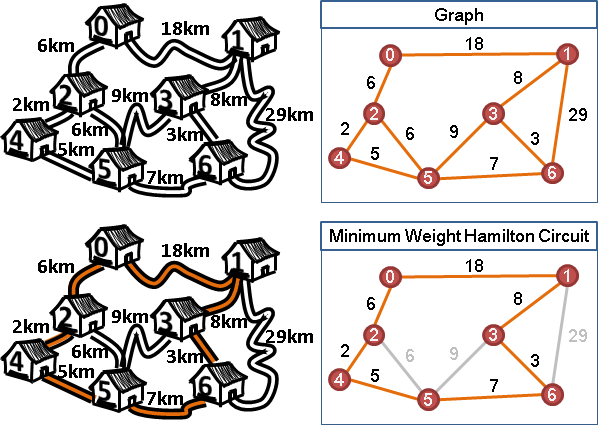
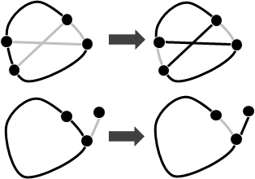

Hamilton Circuit
Hamilton Circuit（Hamilton Cycle）

每一點剛好經過一次的路線，起點和終點相同。可能有許多種，也可能不存在。
Hamilton Path
每一點剛好經過一次的路線，起點和終點不相同。可能有許多種，也可能不存在。
Travelling Salesman Problem
一個周遊各國的商人，他想去所有不同的城市買賣東西。商人打算從其中一個城市出發，各個地方剛好經過一次、只能經過一次，回到原城市。請規劃出距離最短的路線，以及算出距離。
有時候走回頭路會比較快，然而商人就是不想這麼做。
這個問題其實就是找到權重最小的Hamilton Circuit。
找到一個Hamilton Circuit
判斷是否存在Hamilton Circuit、找到一個Hamilton Circuit是NP-complete問題，找到一個權重最小的Hamilton Circuit是NP-hard問題，目前尚未出現有效率的演算法。
以Backtracking窮舉所有地點排列方式，一一判斷是否可行，時間複雜度為O(V!)。運用「Dynamic Programming」可降低為O(2^V * V^2)。
並不是所有的圖都難以找到Hamilton Circuit。連結性質比較強的圖，就容易找到Hamilton Circuit，例如Ore's Theorem與Knight's Tour。
Ore's Theorem
http://www.math.fau.edu/locke/Dirac.htm
一張無向圖上所有不相鄰的兩點，滿足degree相加大於等於V，就一定存在Hamilton Circuit，而且有O(V^2)的演算法可以找到一個Hamilton Circuit。
一、隨機走出一條路徑，盡量長： 如果是路徑，則從步驟二開始；如果恰好形成環，則從步驟三開始。 輪流進行步驟二與步驟三，直到形成Hamilton Circuit為止。 如果無法操作表示此無向圖無Hamilton Circuit。 二、路徑變環（總共增加一條邊）： 路徑(p1, p2, ..., pk)。 路徑上找到一條邊(pi, pi+1)，同時原圖又有邊(pi, pk)與邊(pi+1, p1)， 去掉邊(pi, pi+1)、接上邊(pi, pk)與邊(pi+1, p1)， 形成環(p1, p2, ..., pi, pk, pk-1, ..., pi+1, p1)。 三、環變路徑（總共增加一個點）： 環(p1, p2, ..., pk, p1)。 環上找到一點pi，同時原圖又有邊(pi, q)連到環外一點q， 就去掉邊(pi, pi+1)、接上邊(pi, q)， 形成路徑(q, pi, pi-1, ..., p2, p1, pk, pk-1, ..., pi+1)。 或者去掉邊(pi, pi-1)、接上邊(pi, q)， 形成路徑(q, pi, pi+1, ..., pk-1, pk, p1, p2, ..., pi-1)。
UVa 775
Knight's Tour
一隻騎士放在西洋棋盤上。讓騎士一筆劃走過棋盤上六十四個方格、回到原點。

此問題是Hamilton Circuit的特例。給定N x M的棋盤，有O(NM)的演算法可以找到一個Knight's Tour。
懶惰的方式是Warnsdorff's Rule：每一步都走向後續路線最少的格子；如果同時有很多格子，就走向最左邊、最下邊的格子。這個方法有時會出錯。

UVa 10255